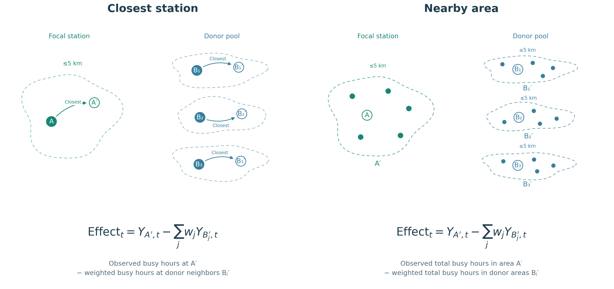

Method diagrams & formulas

Network
- Same: Neighbors on the center station’s network.
- Different: Neighbors on other networks.
- Total: All networks: one nearest station for Closest; all neighbors summed for Nearby.
- Common: Compare Same and Different using the same retained events.
Parameter details
- Pre-treatment: Days −7, −6, −5, −4, −3, −2; day −1 excluded.
- Baseline: Driving distance ≤5 km; all focal networks.
- 10 km: Increase the driving-distance limit to 10 km.
- EVgo only: Keep events whose focal station A belongs to EVgo.
- Straight-line distance: Use straight-line distance to select neighbors; limit ≤5 km.
- 20-minute driving time: Select by estimated driving time; limit ≤20 minutes.
Missing donor weight per day: <1% omit without rescaling; 1–5% renormalize; >5% or missing treated outcome: omit the day.
Average ATT
Event disruption length
Pre-treatment fit
Spatial distribution
Five duration panels · Selected outcome
Sample retention by duration
Predicting day −2
SC weights are fitted on days −7 to −3. Day −2 is held out: prediction error = observed − synthetic busy hours. The pre-fit filter uses only the five fitting days.
Daily effects after disruption
For duration ≥n, the same retained events are used from day 0 through day n−1.
Day 0 vs original Pre7
The pre-fit filter is recalculated, so retained event counts can differ.
Spillover measure · Baseline
Nearby Same · 5 km · Fixed baseline analysis
Average over the selected window
Share of lost plug-hours
Daily effects
Definitions
Plug: observed use minus its available pre-day mean (−7, −6, −5, −4, −3, −2). Station and Nearby Same: observed minus synthetic control. Other plugs = station − plug.
Share = component change ÷ lost plug-hours over the same events and days. This combines before–after and SC measures. 95% CIs use 1,000 joint focal-station cluster bootstrap draws.